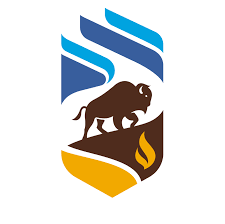
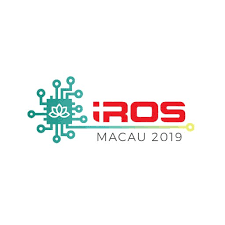
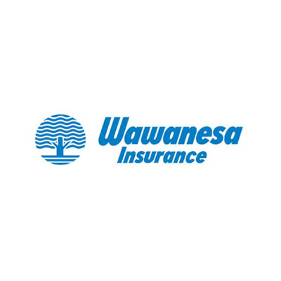
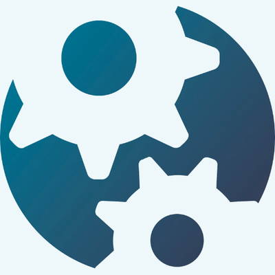
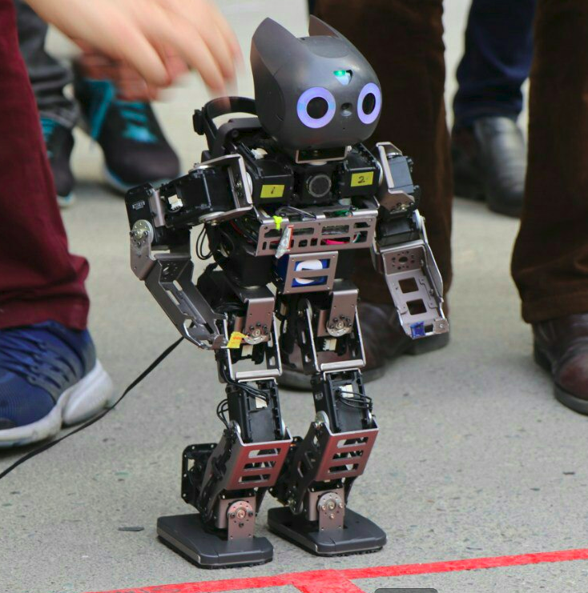
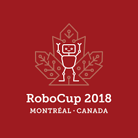
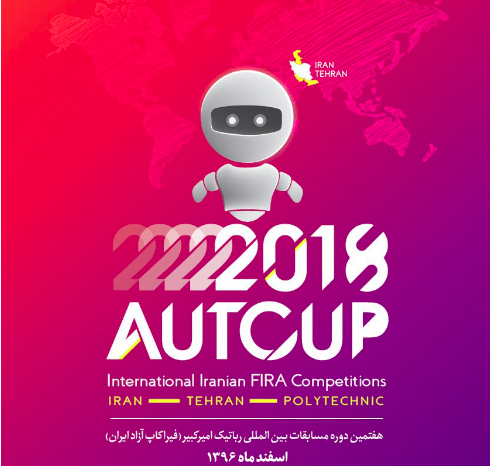

Building Evotrux
Building the future of spot freight. Also learning how to build the team I'd want to be part of.
Road to Seed RoundI’ve worked on freight software, full-stack systems, cloud infrastructure, IoT, and humanoid robots. Here’s the history, with links to what I wrote along the way.
“Also learning how to build the team I’d want to be part of.”
Building the future of spot freight. Also learning how to build the team I'd want to be part of.
Road to Seed RoundWorked at Evotrux as a full-stack developer/devops engineer/whatever hat is needed for the day. Evotrux is a B2B freight marketplace helping shippers and carriers work together — no middleman required.
Lessons from a successful(ish) mvp startup launchWorked as Software Developer at AGCO Winnipeg (formerly 151 Research). My work focused on full-stack dev, cloud, embedded Linux and IoT. Worked with great tech and even cooler people. Also got the chance to live through a startup's glory days and what happens after acquisition.

Graduated from the University of Manitoba with a B. Sc. in Computer Science, Co-op.
As Junior Research & Technology editor at the Manitoban, I wrote articles about local and university events related to research and technology.
Worked as a Software Developer intern at 151 Research doing full-stack developement. Learnt full stack development with a dash of IoT and embedded Linux.

Earned second place along with the Autonomous Agents Lab team members at the International Conference on Intelligent Robots and Systems (IROS) where we developed a musical experience with two humanoid robots.
The first Canadian robot rock band
Interned at the Wawanesa Innovation Lab. Worked on multiple full-stack POCs across different technologies, including Blockchain and AR.

Selected to participate in Hack the North 2019. Built a decentralized application to allow journalists and activists to share their work in an uncensorable and tamper-proof platform using Ethereum, React and the IPFS.

Participated in FIRA (Federation of International Robot-soccer Association) robotics competition in Taiwan. Participated along with U of M Snobots team. Won archery category gold!

Participated in RoboCup robotics competition. Earned first place in technical challenge category with U of M Snobots team.

Participated in AUTCup robotics competition at Amirkabir University of Technology (AUT) in Tehran. Earned first place overall in HuroCup category adult size along with U of M's snobots team.
Landed in Canada for the first time to pursue the Computer Science program at the University of Manitoba.